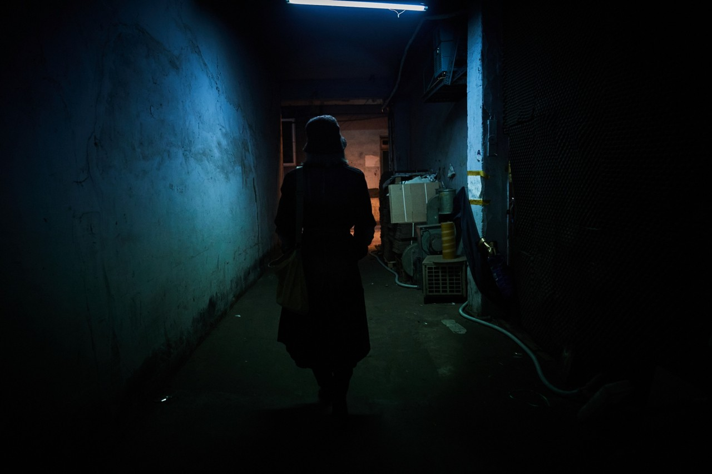
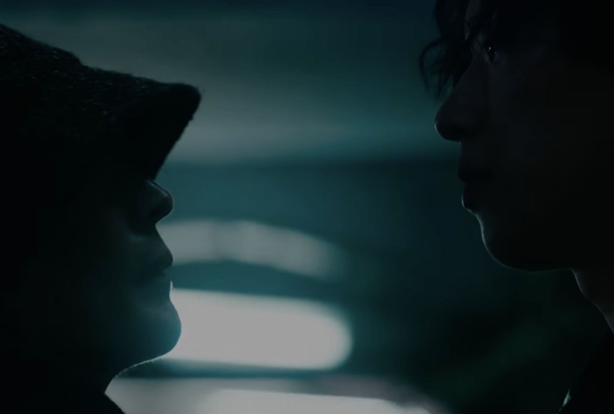
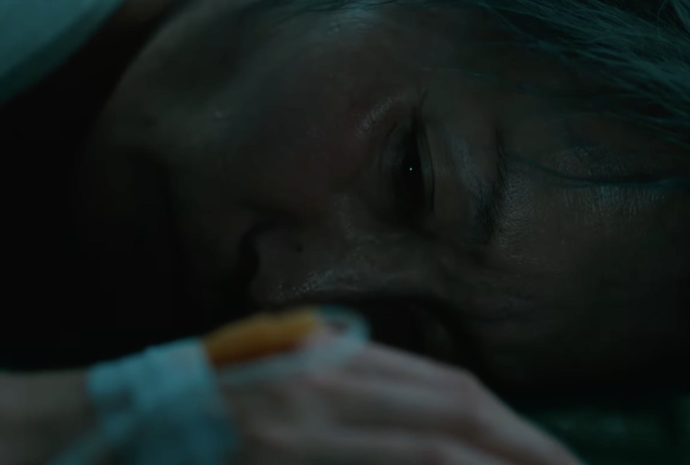

조각

60대 여성 킬러 조각.

그녀는 냉철하고 노련한 업계의 대모다.

수많은 세월 동안 단 한 번의 오차도 없이 의뢰를 처리해 온 그녀.

하지만 흐르는 시간 속에서 그녀의 칼날도 조금씩 무뎌지기 시작한다.
투우의 등장

조각의 곁을 맴돌며 예리하게 숨통을 조여오는 새로운 인물.

숨 막히는 긴장감 속에서 조각에게 자꾸만 시비를 거는 투우.

그의 도발은 단순한 장난이 아닌, 거대한 폭풍의 전조였다.
조각의 부상 그리고 강 박사와의 만남

노화로 인해 이전 같지 않은 몸. 한순간의 실수로 조각은 치명적인 부상을 입고 의식을 잃은 채 강 박사의 병원으로 실려 온다.

정신이 들자마자 킬러로서의 본능적인 방어기제와 극도의 경계심으로 눈앞의 강 박사를 거칠게 몰아붙이는 조각.
차가운 무기를 목에 겨눈 숨 막히는 대치 속에서, 두 사람의 기묘하고도 위태로운 인연이 시작된다.
지키고 싶은 것들이 생긴 조각
강박사의 가족을 만난 조각. 그녀는 강 박사의 딸을 보고 처음으로 지키고 싶다는 마음을 갖게 된다.
소중한 것들을 지키기 위한 마지막 혈투
강박사의 딸을 지키기 위한 조각과 그녀를 방해하려는 투우의 마지막 혈투가 시작된다.